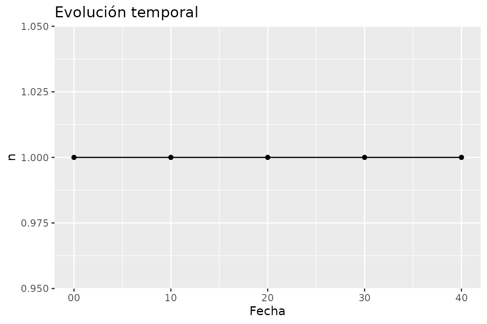
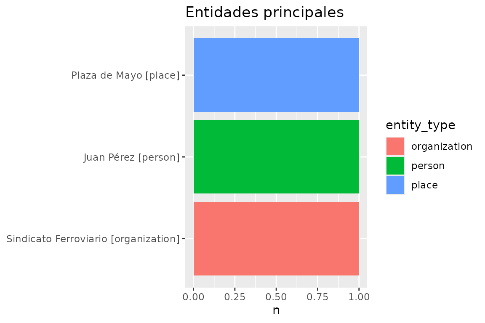
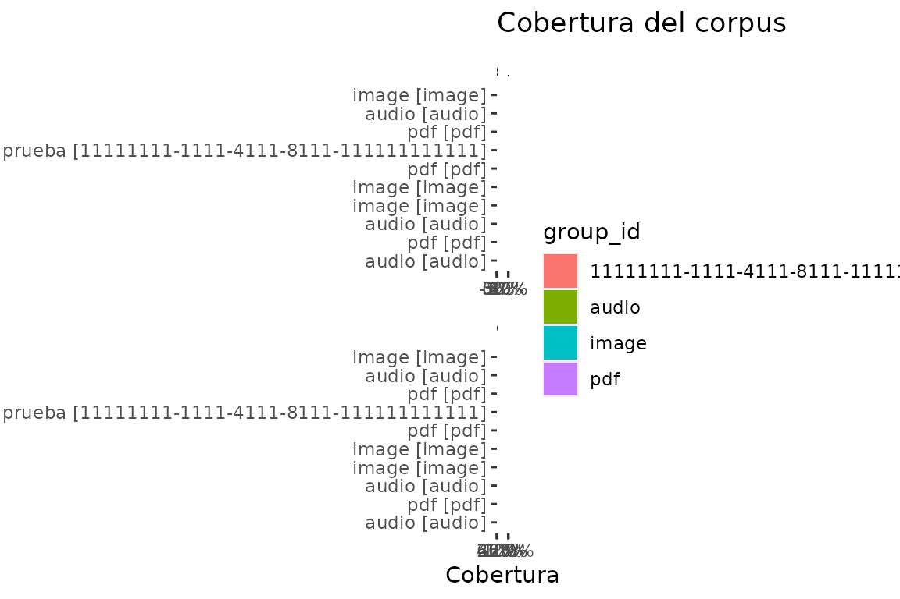
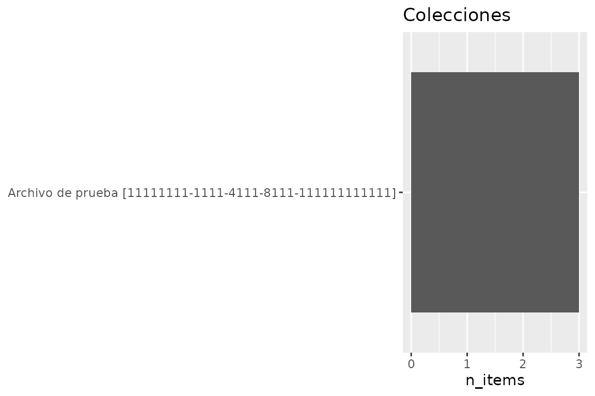

A complete reproducible analysis
analysis.en.RmdEnglish version. Spanish:
vignette("analysis").
This vignette walks one end-to-end analysis: snapshot the database, build a provenance-stamped dataset, profile it, and export — everything documented so the result can be reproduced later.
1. Snapshot, then connect
The database may be live under EntropIA. Before analysis, take a
snapshot with entropia_copy() and run against
that, so the analysis is immune to writes landing mid-run and
the provenance records a stable source.
con <- entropia_connect(system.file("extdata", "entropia-example.sqlite", package = "entropiaR"))
snap <- tempfile(fileext = ".sqlite")
entropia_copy(con, snap)
snap_con <- entropia_connect(snap)
entropia_disconnect(con) # original connection no longer needed2. Inventory the snapshot
entropia_overview() is the cheap first pass: counts,
quality and entity prevalence without collecting OCR text.
eda <- entropia_overview(snap_con)
eda$counts
#> # A tibble: 5 × 3
#> metric unit n
#> <chr> <chr> <int>
#> 1 items item 3
#> 2 assets asset 5
#> 3 collections collection 1
#> 4 items_without_assets item 0
#> 5 pages asset 2
eda$collections
#> # A tibble: 1 × 5
#> collection_id collection_name n_items n_assets n
#> <chr> <chr> <int> <int> <int>
#> 1 11111111-1111-4111-8111-111111111111 Archivo de prueba 3 5 53. Build the analysis dataset
entropia_analysis_dataset() applies filters to the
corpus, collects it, and stamps provenance v2. This is the boundary:
everything after it is ordinary tibble work.
corpus <- entropia_analysis_dataset(snap_con, name = "corpus_full")
#> Warning: Missing values are always removed in SQL aggregation functions.
#> Use `na.rm = TRUE` to silence this warning
#> This warning is displayed once every 8 hours.
corpus
#> entropia_dataset: corpus_full
#> schema: 0029_rag_chunks hash: 09d4c603b66d
#> # A tibble: 5 × 19
#> item_id item_title collection_id metadata item_created_at
#> <chr> <chr> <chr> <list> <dttm>
#> 1 22222222-2222-4222-… Manifiest… 11111111-111… <named list> 2026-01-15 12:01:00
#> 2 22222222-2222-4222-… Manifiest… 11111111-111… <named list> 2026-01-15 12:01:00
#> 3 22222222-2222-4222-… Manifiest… 11111111-111… <named list> 2026-01-15 12:01:00
#> 4 22222222-2222-4222-… Carta al … 11111111-111… <named list> 2026-01-15 12:03:00
#> 5 22222222-2222-4222-… Fotografí… 11111111-111… <chr [1]> 2026-01-15 12:05:00
#> # ℹ 14 more variables: item_updated_at <dttm>, collection_name <chr>,
#> # collection_description <chr>, collection_created_at <dttm>,
#> # collection_updated_at <dttm>, asset_id <chr>, asset_path <chr>,
#> # asset_type <chr>, asset_size <int>, asset_created_at <dttm>,
#> # asset_sort_index <int>, parent_asset_id <chr>, page_number <int>,
#> # text <chr>
entropia_provenance(corpus)
#> entropiaR dataset provenance
#> name: corpus_full
#> schema version: 0029_rag_chunks
#> schema hash: 09d4c603b66d68c4c0cef0f51ff09a04fb30a49fe200907ef69693d11dd25732
#> dataset hash: c7d9e919196ad9347a4ba5b7fdeff6a8bfe94e3703ee2f79d05624a7f93a40f0
#> scope: origin
#> source path: /tmp/RtmpKJfJFJ/file1fcabbbb395.sqlite
#> package: 0.0.0.9000
#> built at: 2026-09-11T18:45:05.224Z
#> R version: R version 4.6.1 (2026-06-24)4. Temporal profile
When were assets created? entropia_temporal_profile()
buckets a date column. Collect the asset accessor directly —
entropia_collect() types its millisecond timestamps to
POSIXct, which the profiler requires:
assets <- entropia_assets(snap_con) |> entropia_collect()
temporal <- entropia_temporal_profile(assets, created_at, unit = "second")
temporal
#> # A tibble: 5 × 2
#> created_at n
#> <dttm> <int>
#> 1 2026-01-15 12:07:00 1
#> 2 2026-01-15 12:07:10 1
#> 3 2026-01-15 12:07:20 1
#> 4 2026-01-15 12:07:30 1
#> 5 2026-01-15 12:07:40 15. Document lengths
entropia_document_lengths() appends character and word
counts per document to any tibble carrying a text column:
texts <- entropia_text(snap_con) |> entropia_collect()
lengths <- entropia_document_lengths(texts)
lengths |> select(id, n_chars, n_words)
#> # A tibble: 5 × 3
#> id n_chars n_words
#> <chr> <int> <int>
#> 1 33333333-3333-4333-8333-333333333331 50 9
#> 2 33333333-3333-4333-8333-333333333332 54 7
#> 3 33333333-3333-4333-8333-333333333333 NA NA
#> 4 33333333-3333-4333-8333-333333333334 NA NA
#> 5 33333333-3333-4333-8333-333333333335 23 4Empty text counts as 0; NA text stays
NA.
6. Entities
entropia_entities() excludes soft-deleted rows by
default and surfaces provenance (source model) per entity.
entropia_entity_frequency() tallies them by type:
entities <- entropia_entities(snap_con) |> entropia_collect()
entropia_entity_frequency(entities)
#> # A tibble: 3 × 3
#> entity_type value n
#> <chr> <chr> <int>
#> 1 organization Sindicato Ferroviario 1
#> 2 person Juan Pérez 1
#> 3 place Plaza de Mayo 17. Topics
Topics are normalized UPPERCASE names. Join item_topics
to topics, then tally:
item_topics <- entropia_item_topics(snap_con) |> entropia_collect()
topics <- entropia_topics(snap_con) |> entropia_collect()
entropia_topic_frequency(left_join(item_topics, topics, by = c("topic_id" = "id")))
#> # A tibble: 2 × 2
#> name n
#> <chr> <int>
#> 1 HUELGA 1
#> 2 SINDICATO 18. Collections side by side
entropia_compare_collections() groups by
collection_id when that column exists, and keeps
collection_name as a label:
entropia_compare_collections(corpus)
#> # A tibble: 1 × 5
#> collection_id collection_name n_items n_assets n
#> <chr> <chr> <int> <int> <int>
#> 1 11111111-1111-4111-8111-111111111111 Archivo de prueba 3 5 59. Corpus quality
entropia_corpus_quality() reports OCR coverage,
transcription presence, and empty texts per asset type, plus metadata
coverage per collection:
quality <- entropia_corpus_quality(snap_con)
quality
#> # A tibble: 10 × 8
#> metric group_id group unit n total pct status
#> <chr> <chr> <chr> <chr> <int> <int> <dbl> <chr>
#> 1 empty_text audio audio asset 0 1 0 ok
#> 2 empty_text image image asset 0 0 NA no_da…
#> 3 empty_text pdf pdf asset 0 2 0 ok
#> 4 metadata_coverage 11111111-1111-4… Arch… item 2 3 0.667 ok
#> 5 ocr_coverage audio audio asset 0 1 0 ok
#> 6 ocr_coverage image image asset 0 1 0 ok
#> 7 ocr_coverage pdf pdf asset 2 3 0.667 ok
#> 8 transcription_presence audio audio asset 1 1 1 ok
#> 9 transcription_presence image image asset 0 1 0 ok
#> 10 transcription_presence pdf pdf asset 0 3 0 ok10. Visualize
entropia_plot_* helpers wrap the analysis summaries in
ggplot2 (Suggests) and return ordinary ggplot objects you
can extend:
entropia_plot_temporal(temporal)
entropia_plot_entities(entropia_entity_frequency(entities))
entropia_plot_coverage(quality)
entropia_plot_collections(eda$collections)
11. Export with provenance
The dataset exports as-is (RDS keeps class and provenance; CSV is streamed for lazy inputs). Always write the provenance sidecar alongside:
export_path <- tempfile(fileext = ".csv")
entropia_export(entropia_corpus(snap_con), export_path)
rds_path <- tempfile(fileext = ".rds")
entropia_export(corpus, rds_path, format = "rds")
prov_path <- tempfile(fileext = "-prov.json")
entropia_write_provenance(corpus, prov_path)The RDS round-trips with its provenance intact:
back <- readRDS(rds_path)
entropia_provenance(back)[["name"]]
#> [1] "corpus_full"Cleanup
entropia_disconnect(snap_con)That is the loop: snapshot → overview → stamped dataset → analyze →
export with a sidecar. See vignette("eda") and
vignette("dashboard") for the shared tables and the local
app.